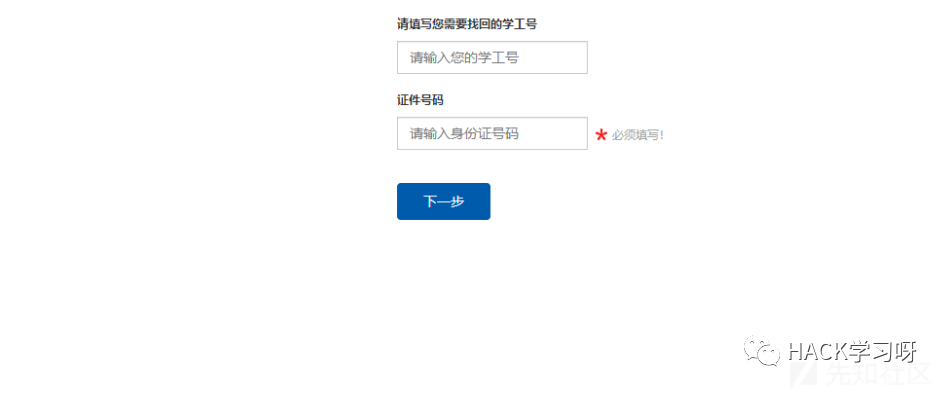
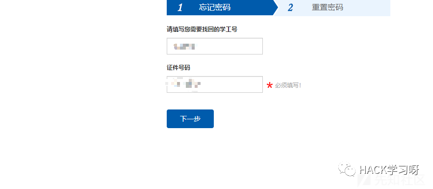
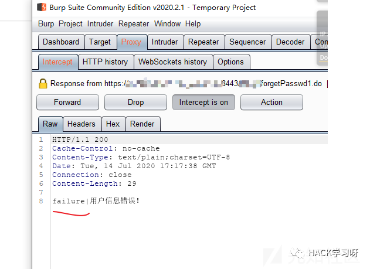
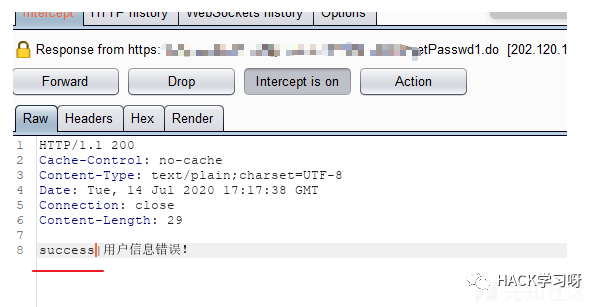
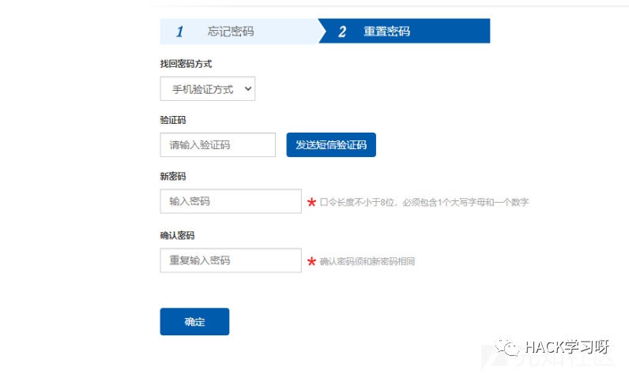
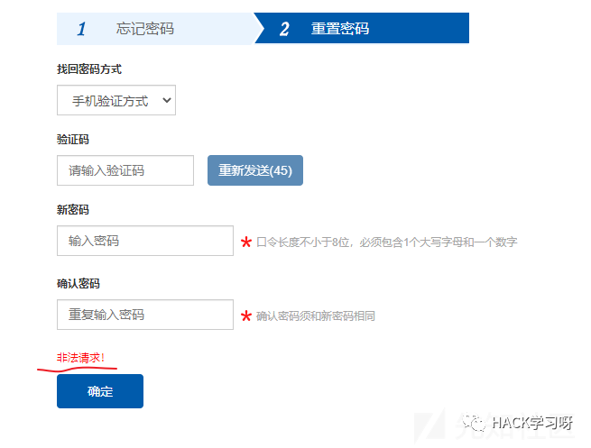
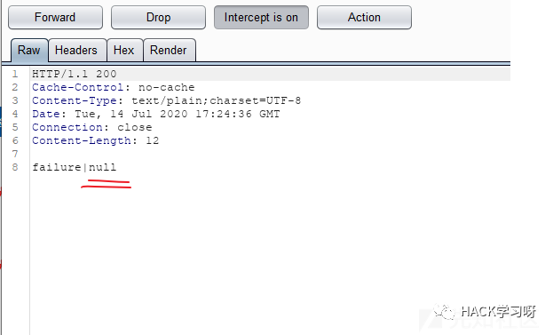
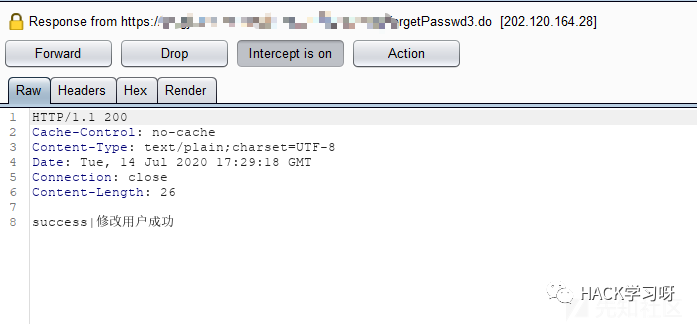
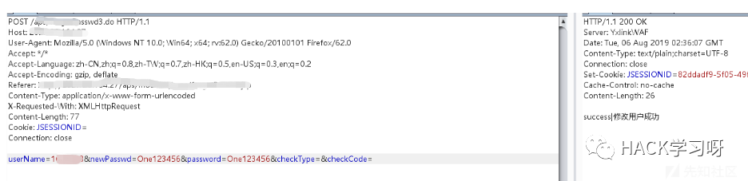

记一次逻辑漏洞的挖掘
某次漏洞挖掘的过程中，碰到一个与以往挖掘的逻辑漏洞有些差别的漏洞，在此记录一下。
漏洞点在忘记密码处。如图。

这里随便找了一个同学的学号进行下一步的操作。
这里正常验证的话，需要学号和身份证的信息，但是我们是没有身份证信息的，但是这里可以简单的抓包然后改包进行下一步。

响应包返回如下

看到这个响应包，相信有经验的师傅们都会会心一笑。这里尝试将响应包的failure改为success.

发现可以成功的带我们来到重置密码的界面。

这里还有一个拦路虎，手机验证码，且不说验证码能不能爆破的问题，仅当我点击发送验证的时候，页面的响应如下

这里看来还验证了上一步学号和身份证的验证结果，发送验证码在服务端看来是非法的。
不死心的我，尝试了将验证码置空，或者填了0000和9999之类的，最后干脆删掉了验证码字段，当然也都没有成功。
最后观察了一下提交密码重置后的响应包，如图。

这里当时看到这个null的时候，突然就灵光一闪。
会不会服务端根本没生成验证码(因为我点击发送验证码的时候显示了非法请求)，从而导致验证码的值为null?
马上尝试了一下，发现了新世界！
请求包如下
再看看返回的响应包，成功了！

这和我以往碰到的单纯改响应包下一步验证的绕过稍稍有些不同，稍微根据响应包返回的信息，猜想了一下后端的逻辑，希望能给各位师傅一起分享一下漏洞挖掘的经验(新手上路大佬轻喷)
其实最后的接口可以未授权，改username来批量改密码哈哈


点赞，转发，在看
文章来源：先知社区
如有侵权，请联系删除